AWS Solutions Architect Associate
Part One: Pluralsight Course: Architecting for Reliability on AWS
AWS SAA C02 exam will include 4 topic
- Resilience
- Performance
- Security
- Cost-Optimization
Chapter One: Resilience
Section One: Availability
Resiliency: The ability of an application to avoid and recover from failure.
Availability: The percentage of time that an application is performing as expected.
Poor performance implies low availablility. Uptime isn't the same as availability.
The service level agreement(SLA) for each service includes its annual availability.
The availability of a single EC2 instance is 90%
The availability of an ELB(Elastic Load Balancer) and EFS(Elastic File System) is 99.99%
The availability of a RDS(Relational DataBase System) multi-AZ(multi-Availability Zone) is 99.95%
The availability of a Lambda is 99.95%
The availability of a S3 is 99.9%
The availability of a DynamoDB with Global Tables (replicates our database across multiple regions) is 99.999%
Traditional web application: can be convert to AWS web application without having to change the code. For example, a traditional video processing application can use Elastic File System(EFS) to store video data. But it cannot use S3 to store video data. Because that requires changes of code.
EFS provides a network file system (NFS) volume, NFS is an established standard that most Linux distributions support.
For DB: we can use (Relational Database Service)RDS. It offers managed database engines (MySQL, MariaDB, PostgreSQL, Microsoft SQL server, Oracle..). AWS manages database infrastructure and backups.
Loose Coupling
One component doesn't depend on a specific component (e.g. URL points to ELB, not a specific EC2), one-to-many relationship
is EFS a single point of failure?
No, Elastic services are always composed of redundant components, they just hide it. Elastic services are always loosely coupled with other services like EC2.
Loose Coupling helps Performance: If our application's performance is low and we want to upgrade our EC2 instances, because they are loose coupled, we can upgrade EC2 instances one by one and our application will still be available, ELB will just route traffic to other instances.
Performance and Availability are linked.
Simple Queue Service
The concept of Loose Coupling can be applied to the application level too. For example, we have a video processing application, we can create two components for this application, the web interface part and the video processing part. Users go to the webpage and submit a request of a video with differnt options, and video processing part gets the request and start processing.
But because processing videos take much more time than sending requests. We need a Message Queue Service to save all the requests in order. Simple Queue Service(SQS) is one option with high availability.
Elastic Container Service
Container helps you to deploy web serices easier. Build an image of your container, deploy the image to an instance, and launch the containser in the image. E.g. Docker
You can have multiple containers in one instance, so it is like you are running multiple web services for the price of one instance. Also, if one container is down, the other containers on that instance will still be running. (Processes running inside the container are isolated from the host.)
Cloud Native Applications
Depend on a cloud service that can't be deployed on-premises
Examples: SQS, S3, DynamoDB
Lambda, S3 and DynamoDB are three main serverless components.
Rather than running the video processing function on a service on a EC2 instance, we could write a Lambda function to do that. Lambda is a serverless service (they are running on a server of course, but the server is managed by AWS and we don't need to worry about it, so we call it serverless.)
Advantages of using Cloud Native Architecture: Scalability, Performance, Convenience
Disadvantages: Could vendor lock-in (have to use AWS services), Slightly lower availability (Cloud services are hard dependencies).
However, because of the scalability of Cloud Applications, if we deploy the application to two different regions, we could improve the availability. (introduce more redundence)
Trusted Advisor
Where you can found the number of limits for all services on AWS.
Section One Summary
Availability is not cheap, we need to found the balance between availability and cost. We can achieve high availability use Redundancy and Loose Coupling
The Simple Queue Service can act as a go-between for loosely coupled services. 1. Sending service places message in a queue. 2. Receiving service polls the queue for new messages. E.g. Online voting service
The Elastic Container Service deploys microservices using Docker containers, can improve availability by running multiple containers on a single instance.
Section Two: Setting up AWS Environment
AWS Budget
In the Billing section, you can create an AWS Budget and setup an email alert, AWS will send you an email when the budget amount has been reached. There are more options.
AWS IAM
AWS has two account types, Root User account and IAM account. We can setup a password policy for AWS accounts.
AWS provides MFA for Root User account in case someone else knows your AWS account credentials.
Delete root user access keys: if someone knows your root user access key, he can use CLI to do anything. MFA will not be required to use CLI if he knows root user access key. So it is recommanded to create an IAM user and create access key for IAM users.
You can create IAM accounts and Groups and assign Policies to Users or Groups, IAM users will use Root account ID or Alias and their account details to login.
CloudTrail: where AWS logs all events such as: user login, user create new resources, user attach policy to its account etc...
Configure AWS account using AWS CLI. This command can also be used to change default AWS credentials in .aws folder.
aws configure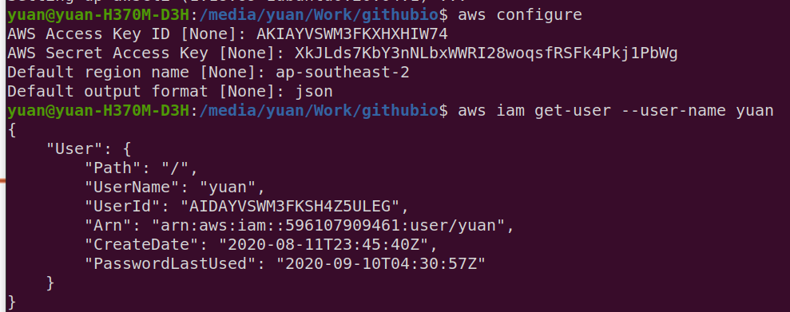
TLS Certificate
TLS(Transport Layer Security): Make sure messages being transferred between Load Balancer and Clients are secure.
ACM(Amazon Certificate Manager): we ask ACM to issue us a TLS certificate
Route 53: when you purchase a domain, you need to config the DNS records, you can do this in the service where you purchased the domain (e.g. GoDaddy) or in Route 53.
Note: Once your TLS certificate has been issued, you still can't visit your website via https, you have to link your TLS certificate to other AWS services like CloudFront or ELB
Section Two Summary
- Set up budget alert
- Create IAM policy
- Set up MFA for the root user
- Create IAM user
- View CloudTrail event history
- Configure AWS CLI
- Create a TLS certificate using ACM
Section Three: VPC networks
AWS managers underlying VPC infrastructrue and is responsible for reliability of VPC network components. You don't need to worry about VPC failures. There are many redundencies built in.
VPC contains one or more subnets. A subnet exists in an availability zone. An instance exists in a subnet.
Because one instance only exists in one subnet which exists in one availability zone, it lacks of redundency and availability is not high. If the zone fails, the instance will fail.
Availability zones: they are basically the data centers in different locations. if you have your instances running in different availability zones, it is highly unlikely that all zones fail.
Client(me) can access a VPC via three ways: 1. Internet Gateway, 2. VPN network, 3. Direct Connect link provided by AWS.
Transit Gateway: high availability service that can connect two networks together (two VPCs)
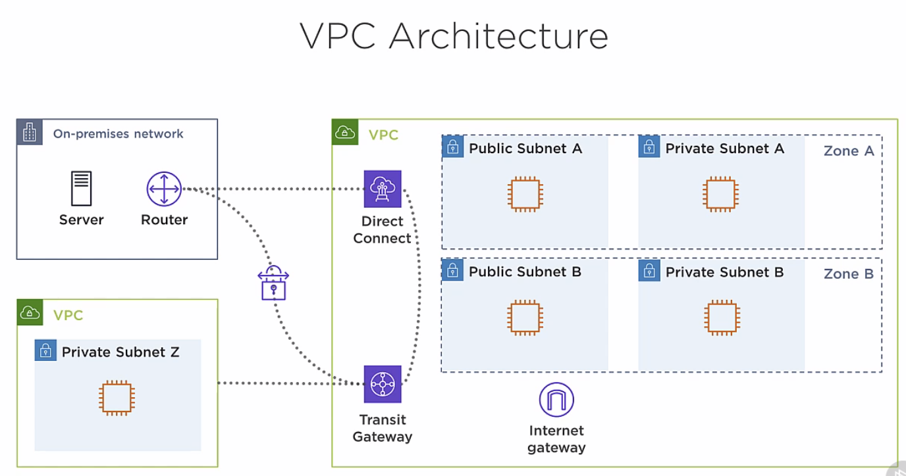Elastic IP Address
EIP allows an instance to retain the same public IP address. EIP is bound to an ENI(Elastic Network Interface), which is attached to an instance. You can move an EIP to differnt ENI
To check EC2 instances EIPs.
aws ec2 describe-addresses
To allocate new EIP
aws ec2 allocate-address
To release the EIP
aws ec2 release-address --allocation-id (your_allocation_id)
Global Accelerator
Provides two anycast IPv4 addresses. While ELP is bound to a AWS region, Global Accelerator IPs doesn't, Users connects to a global accelerator static IP will be routed to a nearest POP(points-of-presence), which then will provide you with resources in any region.
VPC Architecture
Public Subnet: has full access to the internet, can also be reached from the internet.
Private Subnet: is isolated from the internet, cannot reach internet nor be reached from the internet.
NAT Gateway: Provides outbound internet access for instance in Private Subnet
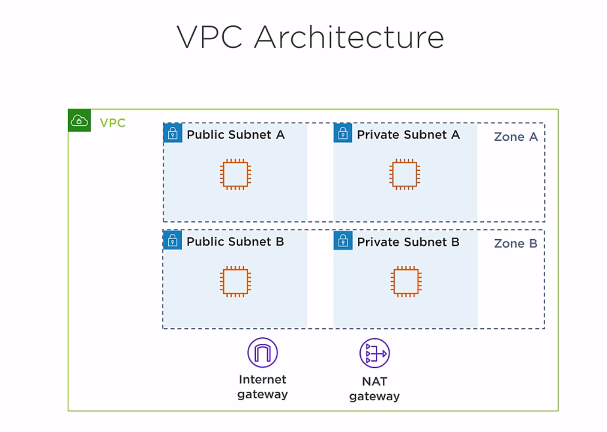Create VPC with Public Subnet and Private Subnet.
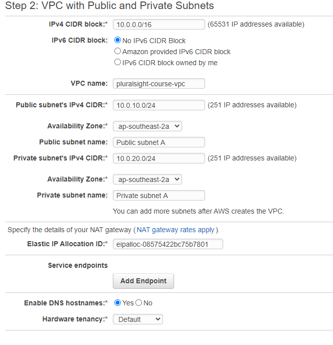Public Subnet has a default Route Rule which route all requests(0.0.0.0/0) to a IGW(Internet Gateway), this allows instance in Public Subnet access public internet(inbound and outbound).
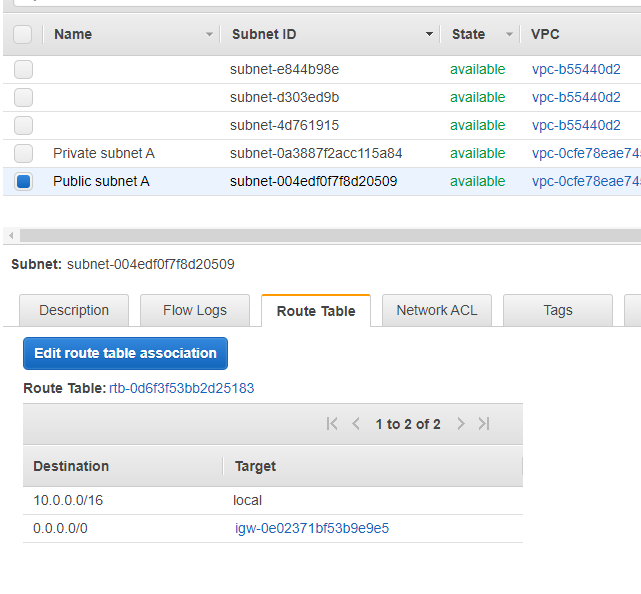Private Subnet has a default Route Rule which route all requests(0.0.0.0/0) to a NAT(NAT Gateway), this allows instance in Private Subnet outbound only access to internet.
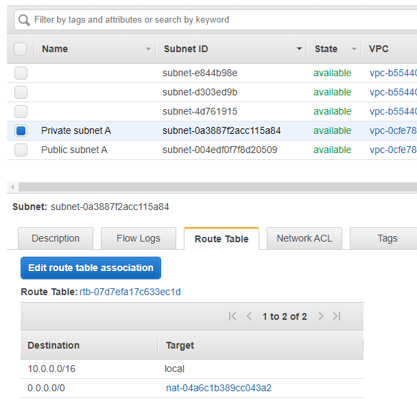NAT Gateway: Instance in private subnet send outbound traffic to NAT Gateway, NAT Gateway then sends traffic to Internet Gateway.
Create multiple Public and Private subnets for redundency.
To find a subnet by its CIDR block, we will be using the subnet ID to launch the instance.
aws ec2 describe-subnets --filters Name=cidr-block,Values="10.0.11.0/24"
Launch an EC2 instance into a public subnet:
Note: subnetId is the ID of your public subnet, which you can get by using the describe-subnets command above. ImageID is the ID of the EC2 instance, it specify some options about the instance you want to launch. key-name is the name of the SSH key pair you created, which you can use later to login to the instance.
You can create or manage your SSH key pair under your EC2 panel, NETWORK & SECURITY tab.
aws ec2 run-instances --subnet-id subnet-0aa8c9baa867b88f0 --image-id ami-0e6449745600ac1da --instance-type t3.micro --key-name hellcyAWSkey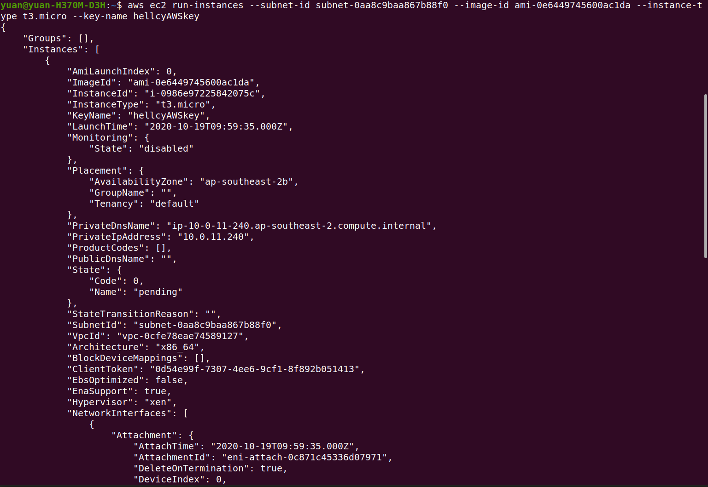
Note: You could optionally associate a public IP address to the instance you are about to launch. By using the command
--associate-public-ip-address
It will make EC2 to associate a temporary public IP address to this instance, and will close the ip address when the instance is stopped. I will not do that because I want to keep the IP and so I will associate an EIP to this instance.
To allocate a new EIP
Note before we have associated the EIP to the NAT gateway. Now we are going to associate the new EIP to the EC2 instacne
aws ec2 allocate-address
To associate the new EIP to the new EC2 instance
aws ec2 associate-address --instance-id Your_Instance_Id --allocation-id Your_EIP_Allocation_Id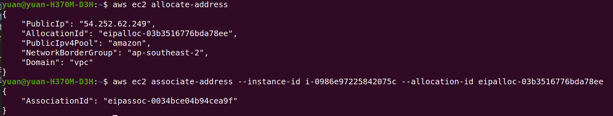
To terminate the EC2 instance
aws ec2 terminate-instances --instance-ids Your_Instance_Id
To release the EIP so AWS will not charge us
aws ec2 release-address --allocation-id Your_EIP_Allocation_Id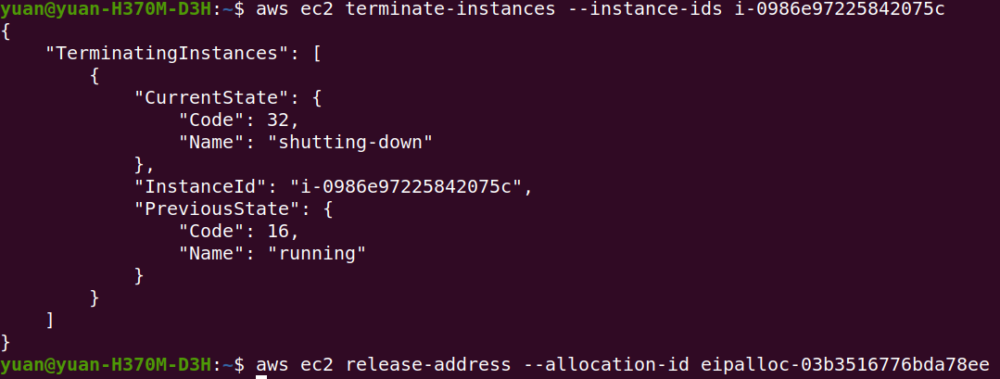
Launch an EC2 instance into private subnet
aws ec2 run-instances --subnet-id [private_subnet_id] --image-id ami-0e6449745600ac1da --instance-type t3.micro --key-name hellcyAWSkey
To delete NAT gateway
aws ec2 delete-nat-gateway --nat-gateway-id Your_NAT_Gateway_Id
Don't forget to release the EIP associated with the NAT gateway.(They will charge for un-associated EIP)
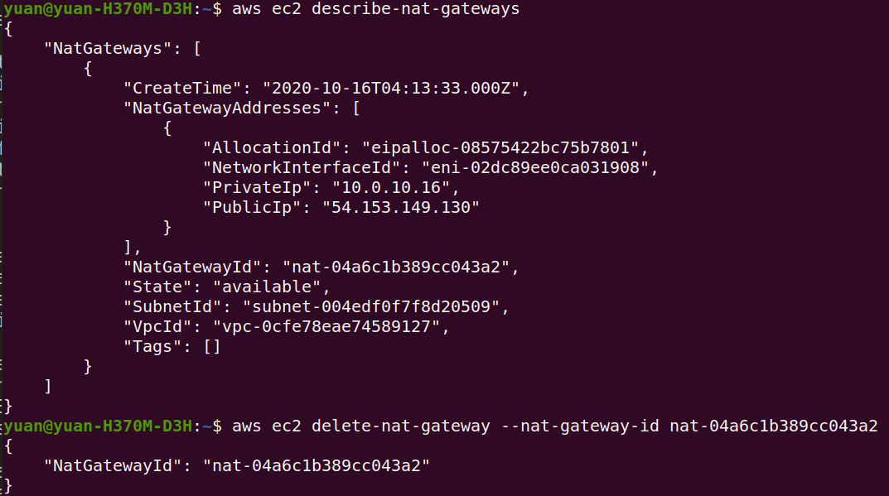AWS Shield Standard
Free service that detects against DDoS attacks, always ON
Direct Connect
Low-latency connection to an AWS region. Bypasses the internet, Two types: Dedicated, Hosted
Dedicated: Physical connection that terminates at a Direct Connection location, fast, 1 or 10 Gbps
Hosted: Last-mile connection provided by a Direct Connect partner(Local ISP). 50 Mbps to 10 Gbps
VPN Connection
Encrypted IPsec connection over the internet, Unpredicatable latency, Can be implemented in two ways: Virtual private gateway, Transit gateway.
Virtual private gateway: Enables you to establish a VPN tunnel with only one VPC. Doesn't scale well when you have multiple VPCs, then you need to create multiple Virtual private gateway for each VPC you want to connect.
Transit Gateway: Connects VPCs and on-premises networks, 1. Terminates multiple VPN connections, 2. Supports Direct Connect. Connects multiple VPCs together.
Transit Gateway Route Tables: Control how traffic is routed between subnets. Can block traffic.
To create a Transit Gateway
aws ec2 create-transit-gateway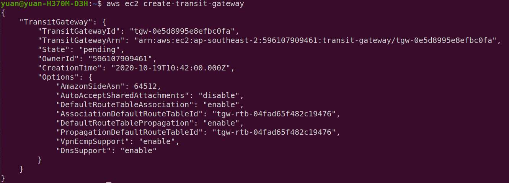
To create a VPC
aws ec2 create-vpc --cidr-block 127.27.0.0/16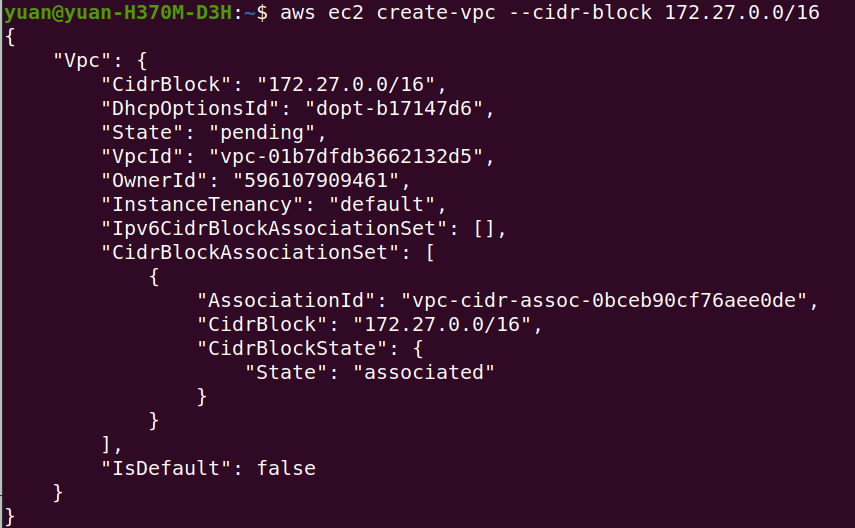
To create a Subnet in the VPC
aws ec2 create-subnet --vpc-id Your_VPC_Id --cidr-block 172.27.1.0/24 --availability-zone ap-southeast-2a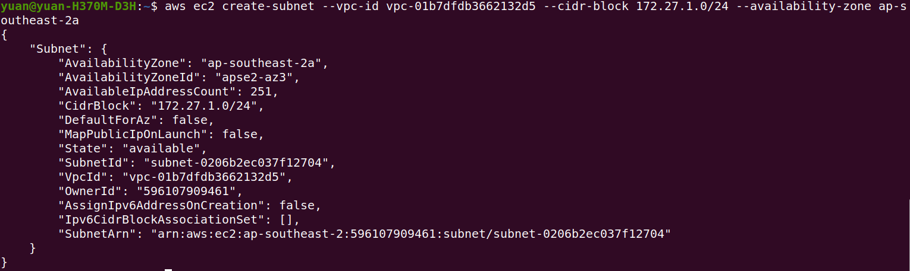
To attach Transit Gateway to the subnet of the VPC
aws ec2 create-transit-gateway-vpc-attachment --transit-gateway-id Your_TGW_Id --vpc-id Your_VPC_Id --subnet-ids Your_Subnet_Ids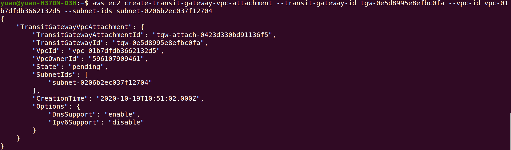
Section Three Summary
- Allocating and assigning EIP addresses
- Creating VPCs
- Creating public and private subnets
- Launching instances into subnets
- Transit gateways
Section Four: Automated Deployments with CloudFormation
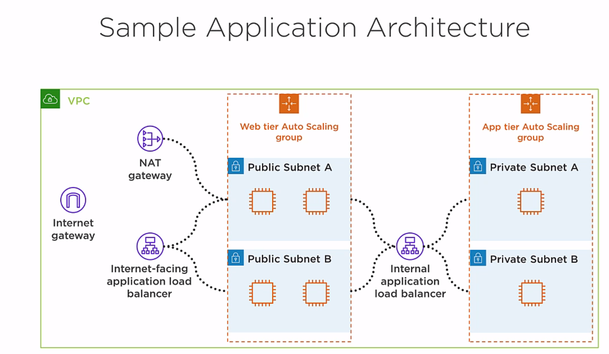Overview of the architecture: The architecture has two tiers, the web tier and the application tier. The client connects to the internet facing application load balancer, it proxies the connection to one of the instances in the web tier, and all of the instances in the web tier are running a web server. The web tier instance then opens a back-end connection to the internal load balancer, which then proxies the connection to one of the instances in the application tier. The idea is that the web tier instance grabs some information from an instance in the app tier, and it displays that information to a webpage, which presents to the client.
The instances in the web tier and the app tier are going to be part of two different Auto Scaling groups. Auto Scaling is going to launch these isntances and make sure we always have a minimum number of healthy instances. If an instance fail, Auto Scaling will terminate it and launch a new one.
CloudFormation
JSON or YAML document that describes AWS resources. Infrastructrue as code. Used to create a stack.
Stack: Created by a template, is a COLLECTION OF RESOURCES that you create, update, and delete as a single unit. You can manually manage individual resources in a stack.
Multiple templates: Different teams manage different resources. Resources have different lifecycles. Distributing resources across different stacks makes them easier to manage.
Template for this course can be downloaded from here. Name: app-stack.json and network-stack.json.
app-stack.json depends on network-stack.json, so it calls network-stack.json to create the nested stack first, then it will create the parent stack by using some of the outputs from network-stack.json.
Stack output: key-value pairs that CloudFormation makes available to other stacks and via the aws cloudformation describe-stacks CLI command.
Application Load Balancers
- Supports HTTP and HTTPS traffic
- You can use any TCP port, default is 80 and 443
- ALB listener receives connection from a client and proxies it to an instance in the target group
- Uses round-robin load balancing by default
- Can monitor health of instances
ALB Schemes
internet-facing: reachable from the internet, public IP address, Public DNS name
internel: Not reachable from the internet, private IP address, Private DNS name
Health Checks
Each instance must pass its health check before receiving traffic. ALB will send HTTP GET request and looks for a success code every 10 seconds.
Auto Scaling Groups
- Launch a certain number of instances into the Auto Scaling group
- Add the instacnes to the ALB target group
- Terminate and recreate unhealthy instances
- Scale in or out based on average group CPU utilization
Follow the steps to deploy stack to AWS Cloudformation
First validate the templates, you will see the output parameters if template format is correct.
aws cloudformation validate-template --template-body file://app-stack.json
aws cloudformation validate-template --template-body file://network-stack.json
deploy the stack to AWS cloudformation
aws cloudformation deploy --template-file "app-stack.json" --stack-name "app-stack"
- Change the TLS certificate ARN
- Change the S3 URL to yours
- Change the SSH key pairs for logging into EC2 instance
- Change the EC2 instance image ID
Note: the template will only work for us-east-1 region, tried using ap-southeast-2 but failed when waiting for the cfn-signal. Probably because the application doesn't exist in ap-southeast-2 docker market.
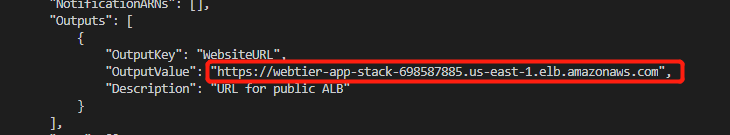aws cloudformation describe-stacks --stack-name "app-stack"
Using the command above we can find the URL of the Internet-facing application load balancer. We securely(HTTPS) connect to this load balancer. And it redirect us to one of the instance in web tier.
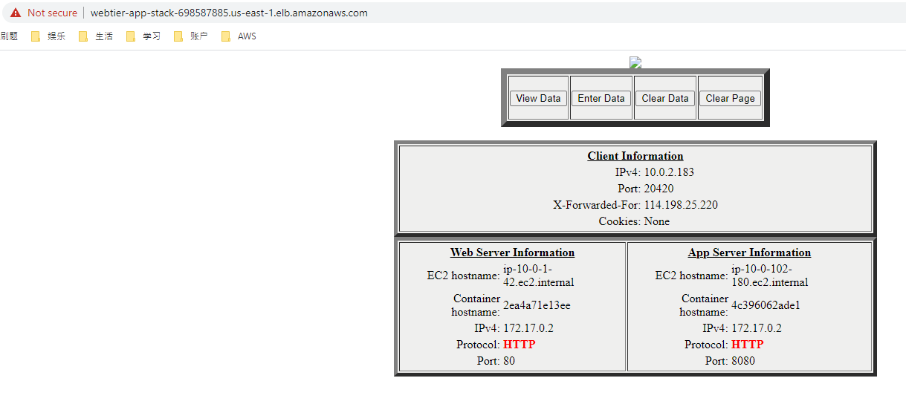Note we do added a TLS certificate in the template. But the TLS certficate is for my website theyuancheng.com, and the domain of the EC2 instance does not match. So we are connecting using HTTP protocol.
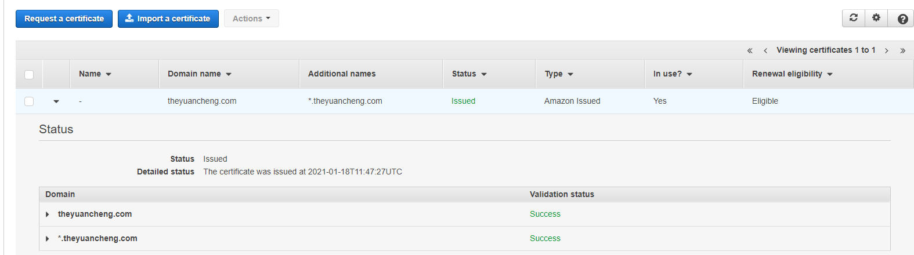 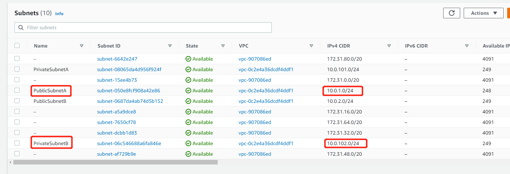Also pay attention to the EC2 hostname, Web tier server information, ip-10-0-1-42 belongs to Public Subnet A, and one of the instance is running inside this subnet. App server information, ip-10-0-102-180 belongs to Private Subnet B, one of the instance is running inside this subnet too.
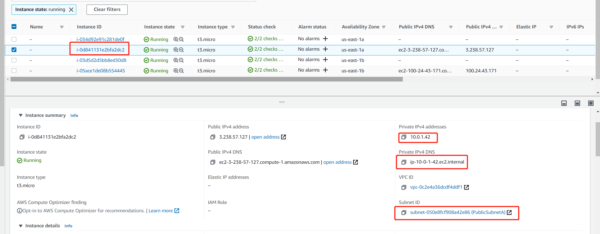 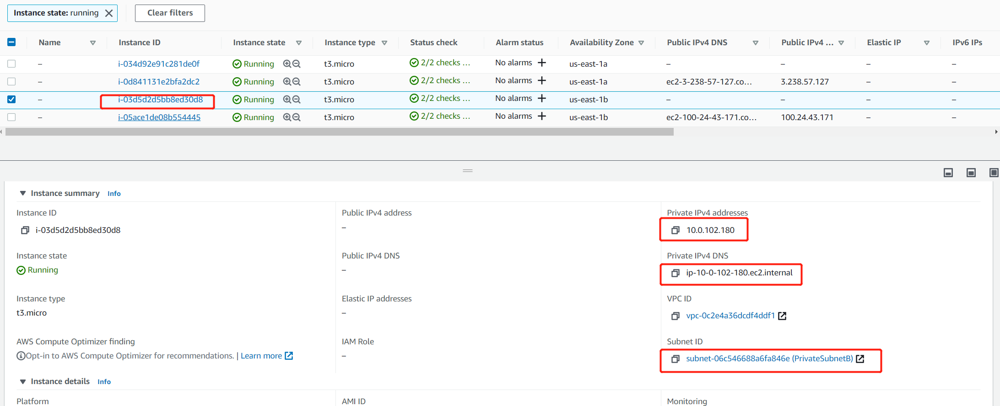If you refresh the URL a couple of times, you can see that the hostname ip we are connecting to changes, which means the load balancer redirect us to a different instance.
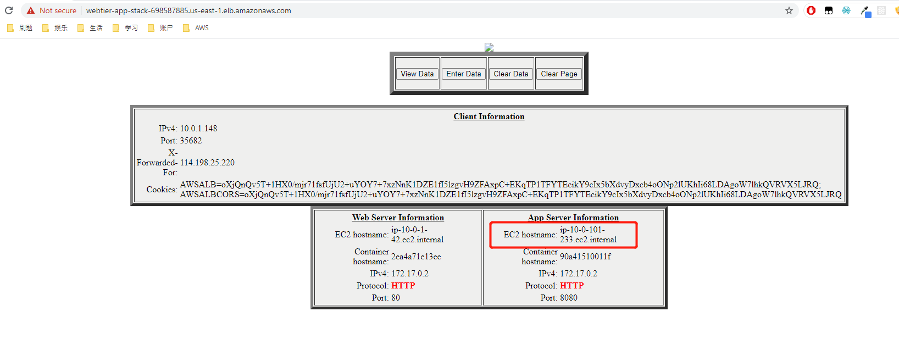Now, let us try to terminate both of the web tier instances and see if Auto Scaling will recreate the instances for us.
aws autoscaling describe-auto-scaling-instances
This command will list all the instances, we can find the instance ids in the list.
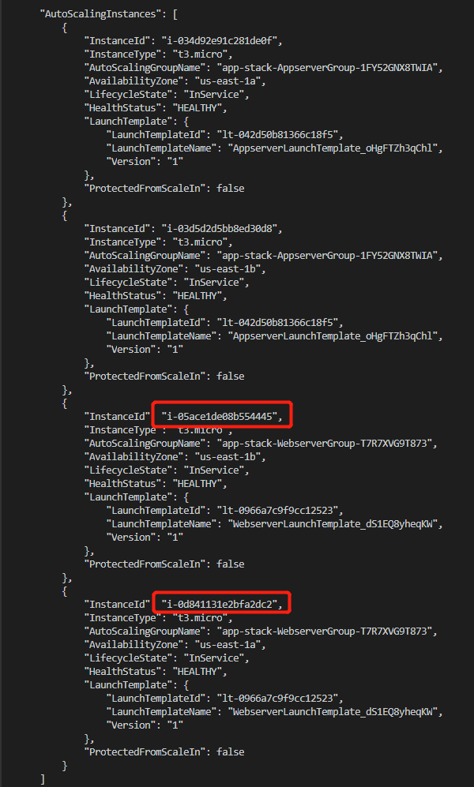aws ec2 termin ate-instances --instance-ids
We can see Auto Scaling automatically recreate another two instances, the intance ids are different.
Use this command to delete the stack.
aws cloudformation delete-stack --stack-name "app-stack"
After deleting the stack, use this command to check if the stack has been deleted.
aws cloudformation describe-stacks
Section Four Summary
- Use Stack template to deploy Auto Scaling multi-tier web application with load balancer.
- Stack will automatically rollback everything if deploy failed.
- Elastic load balancing and Auto Scaling work together. ELB provides health checks, Auto Scaling adds instances to the ELB target group.